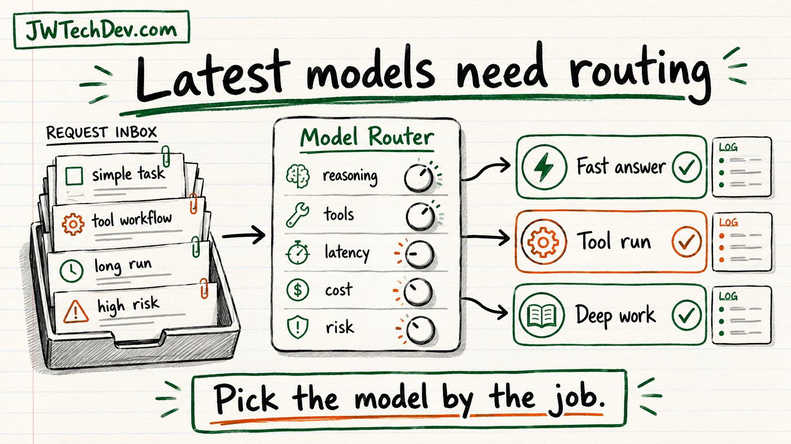

OpenAI latest model guidance is really a routing lesson
The useful takeaway from OpenAI's latest model guide is not just the new model name. It is the operating pattern: route the work before you run the model.

Quick answer
OpenAI's latest model guidance points builders toward a better habit: stop picking models by hype and start picking models by the job.
If the task is simple, optimize for speed and cost. If the task needs tools, use the API surface built for tool workflows. If the task is long-running, plan for async work and mid-turn steering. If the task is high risk, raise reasoning effort, add evals, and verify the output before it touches anything real.
What the latest guide highlights
The official OpenAI model guidance now centers GPT-6 Astra as the most capable model for multistep work across code, browsers, professional software, science, and computer use. The guide also calls out features that matter for builders: async tool calling, mid-turn steering, reasoning changes during a conversation, prompt caching updates, tool workflow guidance, and migration checks.
That is more than a model announcement. It is a signal that serious AI systems are becoming orchestration systems.
The routing lesson
A good model router asks five questions before choosing the model:
How hard is the task? A summary, a formatting pass, and a production architecture review should not use the same settings.
Does it need tools? If the model has to call APIs, browse, write files, inspect code, or wait on external work, route it as a tool workflow.
How long will it run? Long-running tasks need state, progress, and a way to steer the work without starting over.
What is the blast radius? The closer a task gets to money, production systems, permissions, customer data, or public claims, the more verification it needs.
What is the true cost? The cheapest model per token is not always cheapest per accepted task if it creates retries, bad drafts, or cleanup work.
Why the Responses API matters
The guide says to set model to gpt-6-astra in a Responses API request when building with Astra. It also says tool calling requires Responses, even though Astra supports Chat Completions.
That is the practical builder lesson: if your application needs tools, state, orchestration, or richer workflow control, design around the API surface built for that pattern instead of treating every model call like a chat message.
Reasoning effort is a control knob
The latest guide treats reasoning effort like a setting you should manage. If you currently use none or minimal, OpenAI says to start with low and compare results. It also notes that Astra does not support none reasoning effort.
For builders, that means reasoning is part of architecture. Use lower effort for routine work. Raise it when the task is ambiguous, high impact, or expensive to get wrong.
Tools and long work need operating discipline
Async tool calling means the model can continue while your application runs a tool, but the application still owns tool execution and pending state. Mid-turn steering means a user can add direction while the model is working, and the continuation can preserve completed work.
That is useful, but it also pushes responsibility back onto the builder. You still need logs, status, retries, permission boundaries, approval gates, and a clean handoff when the model is waiting on something outside itself.
Migration checklist
If you are updating an app to the latest model guidance, check these items before you celebrate:
Model name: use the documented model value for the model you are adopting.
API surface: use Responses for tool workflows.
Reasoning: compare effort levels instead of assuming one setting fits every task.
Unsupported parameters: remove parameters the guide tells you not to send, including temperature, top_p, and top_logprobs for Astra migration.
Caching: review the prompt caching changes and update cache settings where needed.
Latency tier: check Fast mode compatibility instead of assuming every tier works in every residency or deployment context.
The builder takeaway
The new model guide is a reminder that AI apps need operating systems around the model. The model is important, but the production value comes from routing, tools, context, state, evaluation, cost policy, and human steering.
Pick the model by the job. Then prove the system works around it.
Sources checked
Want the starter kit?
Grab the free JWTechDev.com starter kit if you want a practical way to connect cloud basics, AI workflows, and approval gates.
Get resources